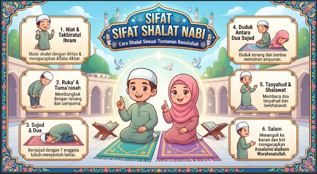

sifat sholat nabi

SIFAT SHOLAT NABI
1. Niat di Dalam Hati
Niat dilakukan di dalam hati dan tidak disyaratkan untuk dilafalkan. Setiap amal bergantung pada niatnya.
"Sesungguhnya setiap amal itu tergantung dari niatnya."
HR. Bukhari no. 1 dan Muslim no. 1907.
2. Berdiri bagi yang Mampu
Berdiri merupakan rukun salat wajib bagi orang yang mampu melakukannya. Salat sunnah boleh dikerjakan sambil duduk, tetapi berdiri lebih utama.
"Siapa yang mengerjakan salat sambil berdiri, maka itu lebih utama."
HR. Bukhari no. 1065.
3. Takbiratul Ihram
Takbiratul ihram adalah mengucapkan Allahu Akbar pada awal salat sebagai tanda dimulainya salat.
4. Membaca Surah Al-Fatihah
Membaca surah Al-Fatihah merupakan rukun salat bagi imam dan orang yang salat sendirian.
5. Rukuk dan Thuma'ninah
Rukuk dilakukan dengan membungkukkan badan dan meletakkan kedua tangan pada lutut. Thuma'ninah berarti tenang dan tidak tergesa-gesa dalam setiap gerakan salat.
6. I'tidal dan Thuma'ninah
I'tidal adalah bangkit dari rukuk hingga berdiri tegak kembali dengan tenang.
7. Sujud Dua Kali dan Thuma'ninah
Sujud dilakukan dua kali dalam setiap rakaat, dengan meletakkan anggota sujud pada tempatnya dan melakukannya dengan tenang.
8. Duduk di Antara Dua Sujud
Duduk di antara dua sujud dilakukan setelah sujud pertama dan sebelum sujud kedua, disertai thuma'ninah.
9. Duduk Tahiyat Akhir
Duduk tahiyat akhir dilakukan pada akhir salat sebelum membaca bacaan tasyahud dan salam.
10. Membaca Tasyahud Akhir
Membaca bacaan tasyahud pada duduk tahiyat akhir merupakan salah satu rukun salat.
11. Membaca Shalawat Nabi
Membaca shalawat kepada Nabi Muhammad SAW setelah bacaan tasyahud akhir.
12. Salam Pertama
Salam pertama dilakukan untuk mengakhiri salat. Bacaan salam yang lengkap adalah:
13. Tertib atau Berurutan
Tertib berarti mengerjakan seluruh rukun salat sesuai urutannya, tidak boleh mendahulukan atau mengakhirkan rukun tanpa alasan yang dibenarkan.
"Kemudian rukuklah dan sertai thuma'ninah ketika rukuk."
HR. Bukhari no. 793 dan Muslim no. 397.